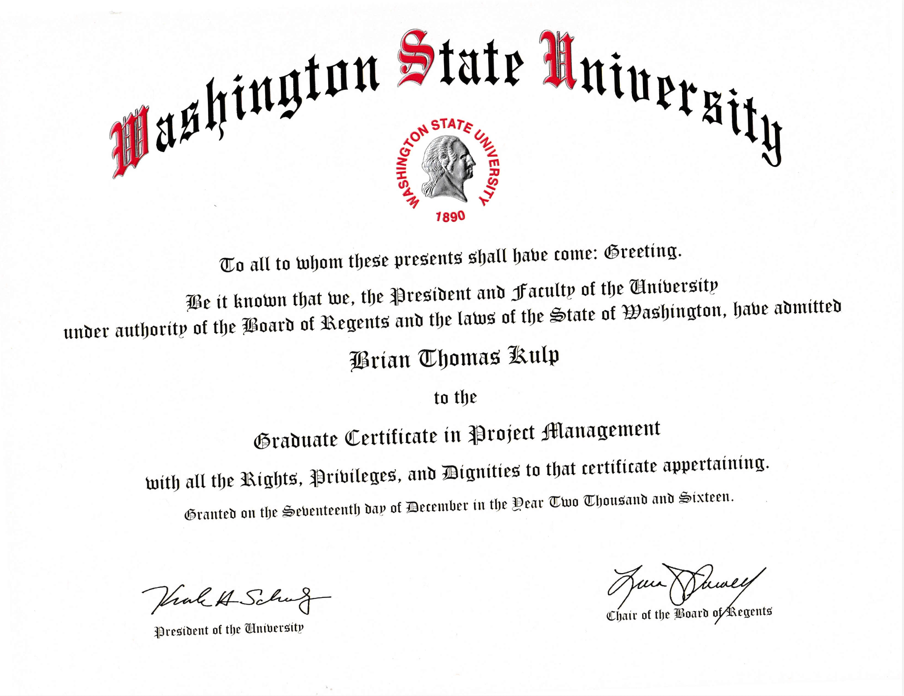
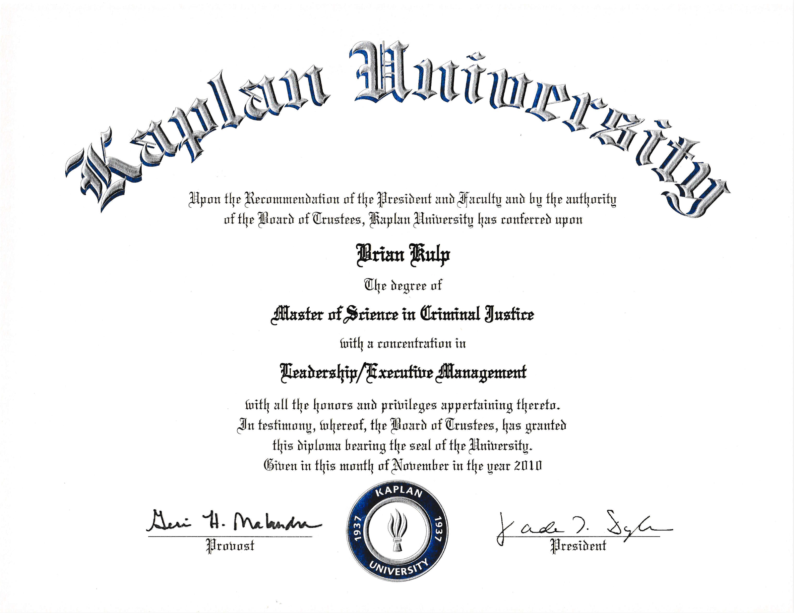
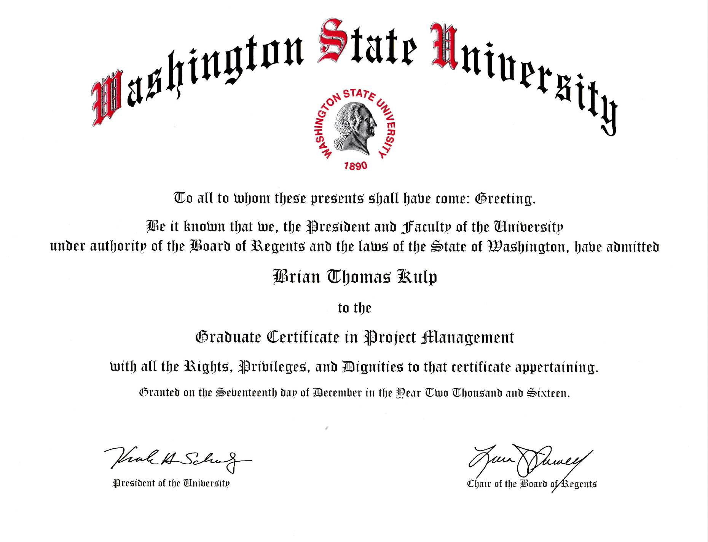
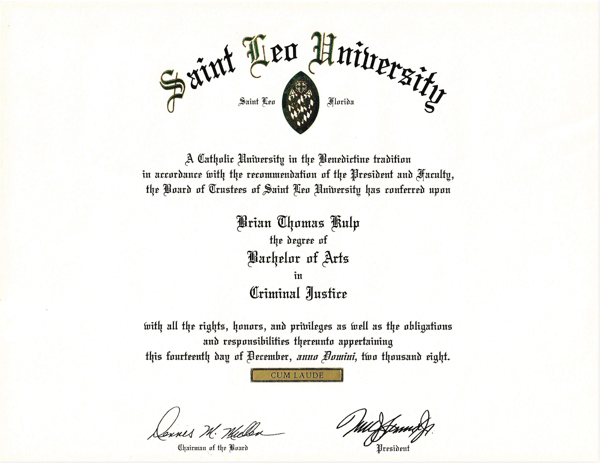

Resume
Education
Master of Science in Engineering Management | Washington State University | 2016

Master of Science in Criminal Justice Management | Kaplan University | 2011

Graduate Certificate in Business Administration | University of Notre Dame | 2018

Graduate Certificate in Lean Six Sigma Black Belt | Villanova University | 2017

Graduate Certificate in Project Management | Washington State University | 2016

Bachelor of Science in Computing Applications | Texas Tech University | 2027 (In Progress)
Bachelor of Arts in Criminal Justice | Saint Leo University | 2006

Professional Experience
C5I INSURV Inspector - Radio & Communications | United States Navy | 2023 - Present


* Conducted inspections and testing of C5I systems, documenting deficiencies and root cause assessments.
* Utilized expert knowledge in UHF/VHF radio systems, including Motorola handhelds, for accurate assessments.
* Prepared detailed inspection reports for senior military leadership and Congress.
Product Support Manager | L3 Harris Technologies | 2017 - 2023
* Authored and maintained User’s Logistics Support Summary and System Maintenance Manual for CIAT.
* Developed component database in CSA and iPDM, collaborating with PROSOFT and Crane for site Gateway creation.
* Managed COTS configuration management, submitting obsolescence surveys and determining life time buys.
Maintenance Manager | Assault Craft Unit Four (US Navy) | 2015 - 2017
* Directed daily operations of 24 electronics maintenance personnel for communications/navigation/radar systems.
* Managed CSMP and PMS for combat systems, reducing corrective maintenance actions by 50% and increasing LCAC readiness by 30%.
* Conducted failure analysis of combat systems and developed test routines for troubleshooting, resulting in over $300,000 cost savings to the Navy.
Assistant Electronics Material Officer | Carrier Strike Group Eleven (US Navy) | 2013 - 2015
* Managed combat systems equipment readiness for a carrier strike group, overseeing preventive maintenance and casualty reporting.
* Led a team in setting up 55 computer workstations and installing 120 NMCI computers, 45 telephones, and a video teleconferencing system.
* Departmental Leading Petty Officer in charge of N6 communications department, ensuring seamless communication within the group.
Filed Service Engineer | Norfolk Ship Support Activity (US Navy) | 2013
* Departmental Leading Petty Officer in charge of N6 communications department, ensuring seamless communication within the group.
* Conducted total ship readiness assessments and technical assist visits on all ships stationed in the Norfolk area.
Micro Miniature Repair Supervisor | USS Enterprise CVN-65 (US Navy) | 2012 - 2013
* Conducted total ship readiness assessments and technical assist visits on all ships stationed in the Norfolk area.
* Managed the foremost micro miniature repair shop in savings for the Navy, maintaining ENTERPRISE's reputation.
Electronics Technician "A" School Master Training Specialist | Center For Surface Combat Systems (US Navy) | 2009 - 2012
* Instructed up to 25 students per class on troubleshooting communication and radar systems.
* Supervised hands-on laboratory sessions for Combat Systems Electronics "A" School.
* Achieved Master Training Specialist qualification for exceptional teaching performance.
Communications Electronics Technician WorkCenter Supervisor | USS Donald Cook DDG-75 (US Navy) | 2006 - 2009
* Achieved Master Training Specialist qualification for exceptional teaching performance.
* Managed preventive and corrective maintenance of SHF/UHF/EHF/VHF equipment to ensure operational readiness.
* Oversaw all ancillary equipment maintenance to support seamless communication operations onboard the ship.
Instructor / Course Supervisor | Center For Surface Combat Systems LS Norfolk (US Navy) | 2002 - 2006
* Instructor for Comsec Maintenance and Single Audio System courses, course supervisor for Single Audio System. Master Training Specialist qualified.
Electronics Technician | USS Wasp LHD-1 (US Navy) | 1997 - 2002
* Instructor for Comsec Maintenance and Single Audio System courses, course supervisor for Single Audio System. Master Training Specialist qualified.
* Managed departmental repair parts as petty officer, ensuring efficient inventory management.
* Collaborated with team members to troubleshoot and resolve technical issues on USS Wasp Lhd 1.